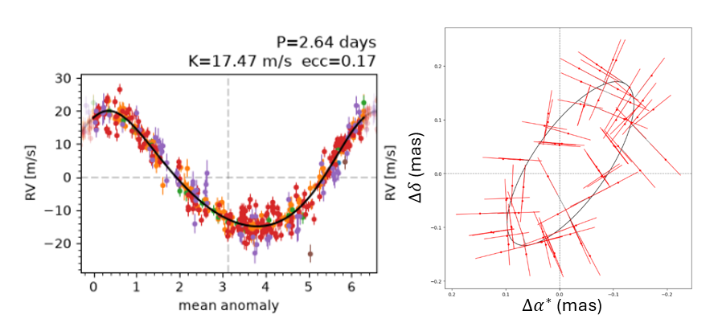
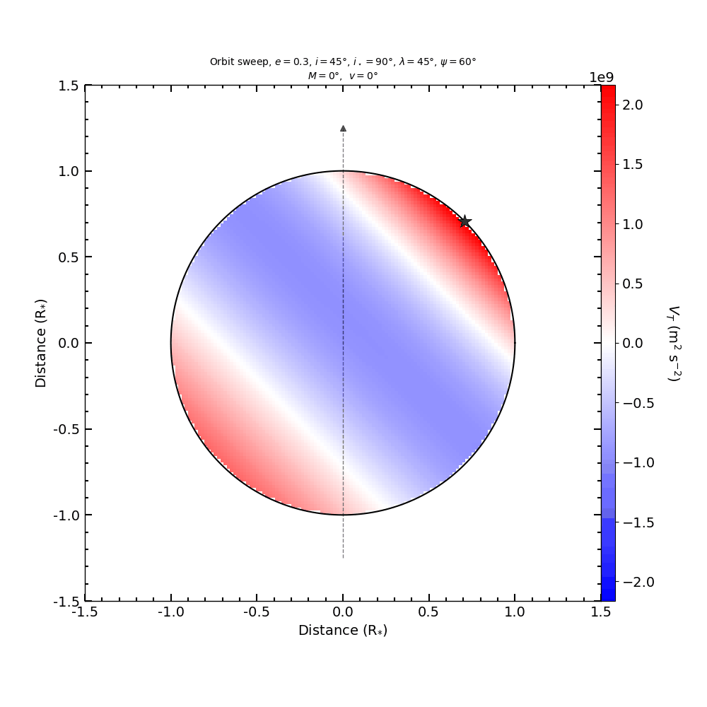
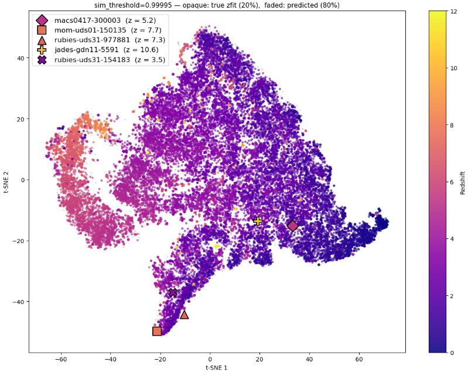
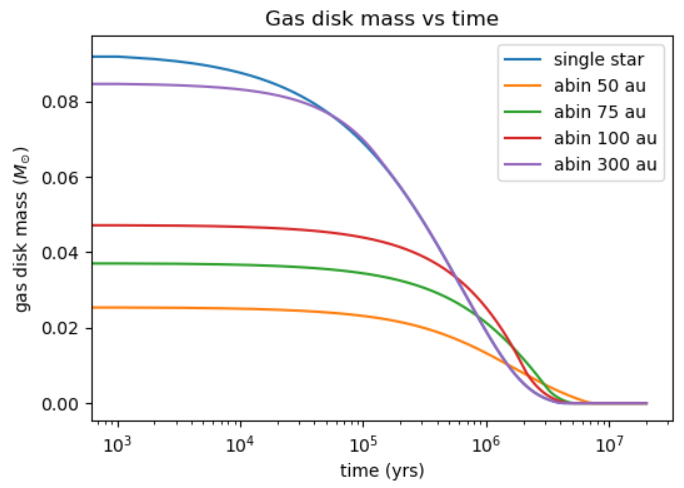
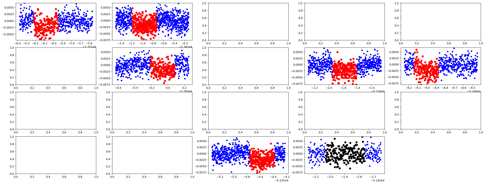

Research
Exoplanet dynamics, stellar astrophysics, and galaxy evolution, from wide-orbit companions of close-in Neptunes to tidally distorted stars to self-supervised learning on JWST spectra.
Current Projects
Master's Thesis: Gaia Companions of Exo-Neptunes
Contributing to two ATREIDES studies that use Gaia DR4 epoch astrometry to characterize known companions of exo-Neptunes and search for new ones, to test whether outer companions drove the high-eccentricity migration that brought these planets into the Neptunian desert, ridge, and savanna. I compiled a homogeneous catalog of stellar, planetary, and companion properties for 420 Neptune systems, cleaned all public and collaboration radial velocity data, and built tools to jointly fit radial velocities and astrometry, which I tested on Hipparcos-Gaia proper motion anomalies ahead of DR4. I am now developing statistical methods to test how spin-orbit angles correlate with planet and companion properties.

Stellar Tides in Transit Spectroscopy
Extending ANTARESS (Bourrier et al. 2024), a public workflow for high-resolution transit spectroscopy, to model host stars distorted by both rotation and the tides raised by a close-in planet, starting with WASP-12. I built a tidal model based on Kaula (1964), transformed it into the ANTARESS frame, and combined it with the rotational potential to solve for the stellar surface at each orbital phase. From that surface I calculate local gravity, gravity darkening, and limb darkening. I am now developing a numerical solver for the surface velocity field, since a tidally distorted photosphere has no closed-form line-of-sight intersection.

Past Projects
Identifying High-z Galaxies with Contrastive Learning
Adapted SimCLR (Chen et al. 2020) to 1D spectra and trained it on ~20,000 NIRSpec prism spectra from the DAWN JWST Archive, after finding that FRESCO's NIRCam grism spectra covered too narrow a wavelength range for the network to learn from. Without redshift labels, the network sorted spectra by redshift by learning the Lyman and Balmer breaks, and redshifts estimated from its clusters matched known values with R² = 0.855. It also picked out two candidate high-redshift analogs of GN-z11. I traced an over-clustering of red sources to how I represented the data rather than to the network itself.

Disk Truncation in Binaries
Built a tool to compute circumprimary and circumsecondary truncation radii from binary eccentricity, separation, mass ratio, and disk viscosity, using the fits of Manara et al. (2019). I then grew planetary embryos with a binary-adapted version of the Bern Model (Emsenhuber et al. 2021) in truncated circumprimary disks at separations of 50 to 300 AU. Tighter binaries produced smaller planets that accreted less gas and migrated more slowly, while at 300 AU planets formed nearly as they would around a single star.

TESS Search for Transiting Circumbinary Planets
Adapted STANLEY (Martin et al. 2021) to search TESS eclipsing binaries for circumbinary (P-type) planets. I tested detrending methods on short-cadence, high-variability TESS light curves to find which removed systematics while preserving transits, validated the pipeline by recovering TOI-1338b, and added linear interpolation to the period vs. θ search grid, cutting compute time in half.

Direct Dark Matter Detection: XENONnT
Worked within the XENONnT international collaboration on direct dark matter detection. Calibrated a neutron generator and designed an experiment to characterize its flux at varying distances and angles. Analyzed experimental data in Python using statistical tests to validate detector signals.